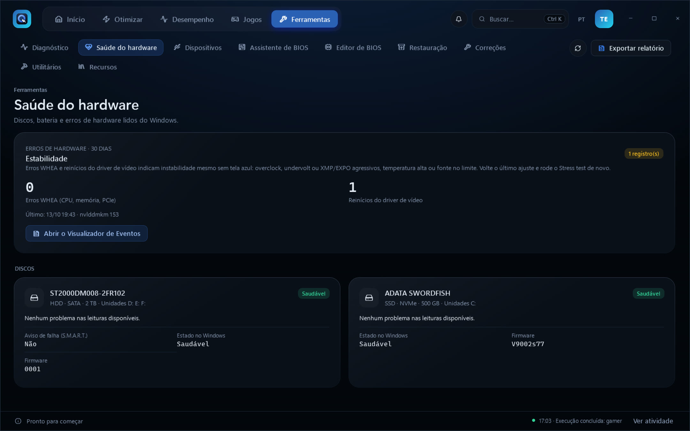
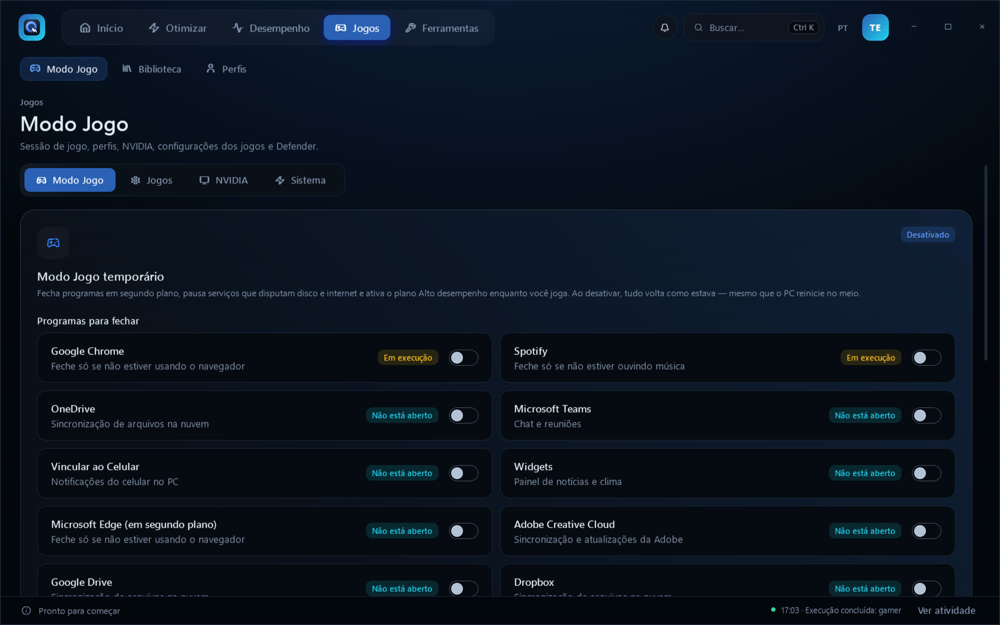
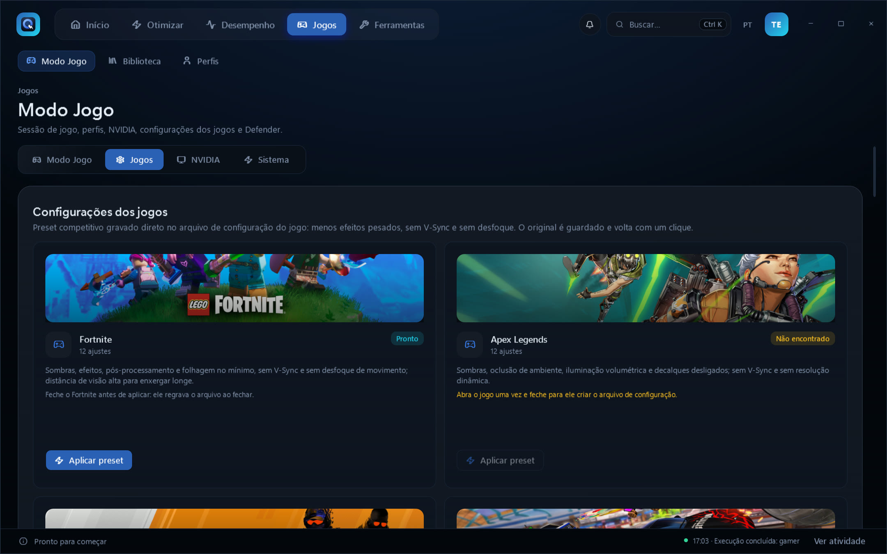
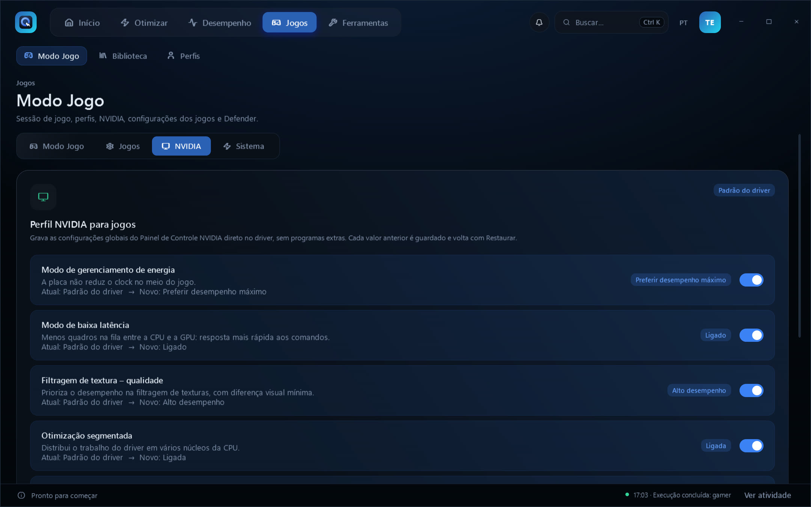
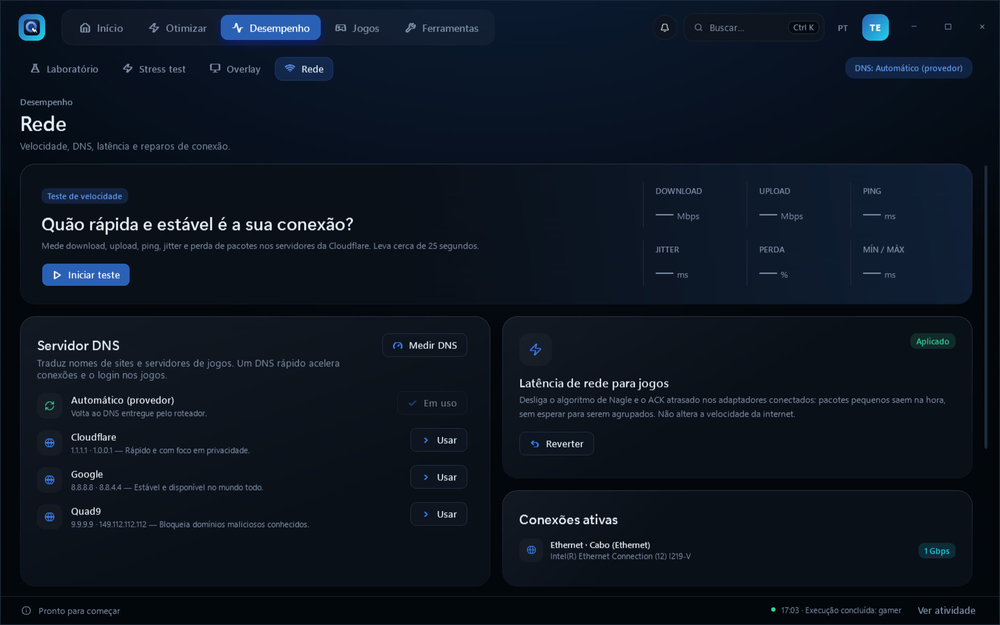
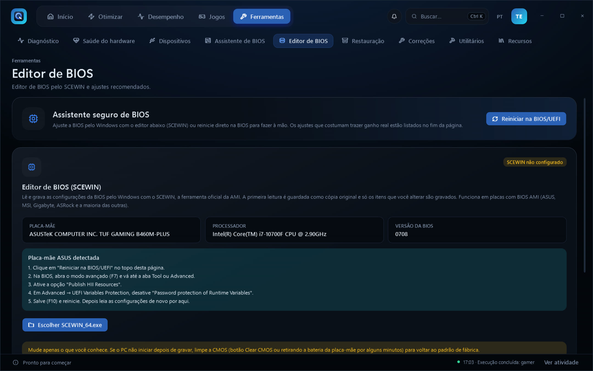

Versão Avançada
Desempenho, latência, privacidade e políticas do Editor de Política de Grupo em um único fluxo revisável.
Ver release ↗POR DENTRO DO QRZTWEAKS
Ferramentas, telas reais e informações para escolher os ajustes do seu PC.
Por dentro do Qrztweaks
O Qrztweaks reúne diagnóstico, manutenção e ajustes avançados em um painel direto. Você escolhe o que aplicar e acompanha cada etapa.
Desempenho, latência, privacidade e políticas do Editor de Política de Grupo em um único fluxo revisável.
Ver release ↗Analise antes de excluir. Arquivos recentes e itens protegidos ficam preservados.
Snapshots, histórico e tentativa de reversão dos itens que falharem.
Hardware, latência DPC, temperatura e benchmark com comparação antes → depois.
01 / OTIMIZAÇÃO INTELIGENTE
Escolha o objetivo e o Qrztweaks lê o hardware e o estado de cada ajuste antes de recomendar. O que já está aplicado, não se aplica ao seu PC ou conflita com outro ajuste aparece separado, com o motivo.
Processador, placa de vídeo, memória, disco, Windows, plano de energia e virtualização. Cada ajuste é lido no registro, nos serviços e nos apps: recomendado, já aplicado, não aplicável, incompatível, requer revisão ou falha na leitura.
Cada item mostra o risco (Seguro, Moderado ou Avançado), se precisa reiniciar, os efeitos colaterais, como reverter e a evidência do benefício. Conflitos bloqueiam a aplicação até você escolher.
Ponto de restauração e backup de cada item antes de mudar. Depois, o estado é lido de novo no Windows: um ajuste só aparece como concluído se a mudança for confirmada.
No objetivo Programação, Docker, WSL e Hyper-V são preservados. Alterações de BIOS e desativação de proteções do Windows nunca entram no Smart Optimize.
02 / LABORATÓRIO DE DESEMPENHO
FPS médio, mínimo, 1% low, 0,1% low e frametime P95/P99 calculados a partir da apresentação real dos quadros, com o PresentMon. Uso de CPU e GPU, memória, clocks, potência e indícios de limitação gravados a cada segundo. Nada é estimado: sem dados reais, o campo fica vazio.
Gráficos de FPS, CPU, GPU e temperatura enquanto você joga, com a captura rodando em segundo plano.
Diferença absoluta e percentual, com aviso quando driver, resolução, Windows ou plano de energia mudaram entre os testes.
Testa um ajuste por vez com várias gravações. Diferenças pequenas ou inconsistentes aparecem como sem diferença comprovada.
Exportação em CSV, JSON e PDF, com hardware, drivers e versão do Windows de cada teste.
Só publicamos resultados verificáveis, cada um com hardware, jogo, configurações, resolução, metodologia, FPS médio, 1% low e variação entre as gravações. Ainda não há resultados publicados; quando houver, eles aparecem aqui.
Metodologia: mesma cena do jogo, mesmas configurações e resolução, pelo menos 3 gravações de 60 s antes e depois, PC aquecido e sem outros programas abertos. O ganho só conta se for consistente (teste t de Welch, p < 0,05) e maior que 3%.
Novo na 2.4
O app ganhou um visual novo — preto azulado com destaque em azul, menu no topo e ícones de traço fino — e cinco páginas que vão além da otimização: diagnóstico, teste de estabilidade e tudo o que você joga num só lugar.

Vida útil e temperatura dos discos (S.M.A.R.T.), desgaste da bateria e erros de hardware dos últimos dias (WHEA e reinícios do driver de vídeo). Exporta um relatório do PC em HTML.
Testa processador e memória conferindo cada passada e os erros durante o teste. No fim, diz se o PC está estável, instável ou se o resultado é inconclusivo — útil para validar XMP/EXPO e overclock.
FPS medido de verdade, tempo de quadro, 1% low e uso de CPU, GPU e RAM por cima do jogo, sem injetar nada. Funciona em jogos DirectX 9 a 12, em janela ou tela cheia sem bordas.
Reúne os jogos da Steam, Epic, GOG e Ubisoft, mais os que você adicionar à mão. Cada jogo abre pela própria loja.
Remove dispositivos "fantasmas" (lembrados pelo Windows, mas desconectados) e libera portas COM reservadas sem uso, com backup e opção de desfazer.
As ferramentas novas seguem as regras do app: só leem e medem, guardam o original antes de mexer e pedem confirmação no que não dá para desfazer sozinho.
A temperatura do processador não é lida: ela exige um driver que o Windows Defender bloqueia por ser vulnerável.
Segurança
Um otimizador roda como administrador. Por isso cada mudança é revisável, tem backup e pode ser desfeita, e o próprio app é protegido contra adulteração.
Recursos
Cada tela abaixo é o Qrztweaks de verdade. Os recursos novos se somam às otimizações revisáveis, à limpeza e à inicialização que você já conhece.

Fecha programas em segundo plano, pausa Windows Update, indexação e telemetria e ativa o plano de desempenho enquanto você joga. Ao desativar, serviços e plano voltam como estavam — mesmo que o PC reinicie no meio.

Fortnite, Apex Legends, Counter-Strike 2 e Rocket League com sombras e efeitos pesados no mínimo, sem V-Sync e sem desfoque. O arquivo original é guardado e volta com um clique.

Gerenciamento de energia no máximo, modo de baixa latência, filtragem de textura de desempenho e cache de sombreador ilimitado, gravados direto no driver. Mais o plano Qrz: processador sem estacionamento de núcleos e PCIe, disco e Wi-Fi sem economia de energia.

Teste de velocidade com perda de pacotes, troca de DNS (Cloudflare, Google, Quad9) com medição de qual responde mais rápido, ajuste de latência para jogos reversível e reparos de conexão.

Leia e ajuste a BIOS pelo Windows com o SCEWIN (placas com BIOS AMI), com recomendações seguras e cópia original. E reinstale o driver de vídeo do zero com o DDU: o novo instalador abre sozinho depois do reinício.
Galeria
Clique para ampliar. Use as setas do teclado para navegar.
Comparativo
Otimização por acesso remoto ou scripts copiados da internet deixam você sem controle do que mudou. No Qrztweaks, é você quem decide.
Em breve Imagem personalizada · 25H2 · build 26200
Três edições do Windows 11 Pro já limpas e configuradas, para começar do zero com uma base consistente: dia a dia, desempenho ou programação. Ainda estão em preparação; entre no Discord para ser avisado no lançamento.
Windows 11 Pro (build 26200) sem apps patrocinados, anúncios, Widgets, Copilot e Recall, com tema escuro Qrztweaks, barra de tarefas limpa e Windows Terminal como padrão.
A ativação usa só meios oficiais: a licença digital do seu PC, a chave gravada na placa-mãe ou uma chave sua. Não há crack nem KMS.
A instalação apaga o disco principal quando ele está vazio e entra direto numa conta local. Faça backup antes e desconecte outros discos.
O Microsoft Defender e o SmartScreen vêm desativados. Se quiser, reative em Segurança do Windows ou use outro antivírus.
O arquivo de instalação passa de 4 GB: grave o pendrive com Rufus ou Ventoy (NTFS), não com FAT32.
Uma janela aplica os ajustes finais e gera um relatório de verificação. Na Developer, as ferramentas são baixadas nessa hora (precisa de internet).
Histórico de versões
O Qrztweaks se atualiza sozinho: cada versão nova é conferida por SHA256 e pela assinatura do Qrztweaks antes de instalar. A lista abaixo vem das releases oficiais no GitHub.